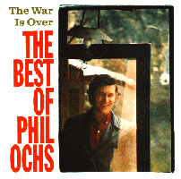

The War Is Over: The Best Of Phil Ochs
Producer
Larry Marks, Van Dyke Parks, Lee Housekeeper
Releases
Date Label Number Country Format Comments
---- ----- ------ ------- ------ --------
1988 A&M USA CD
Back to the Phil Ochs web page
Last modified 18 Oct 98 by trent